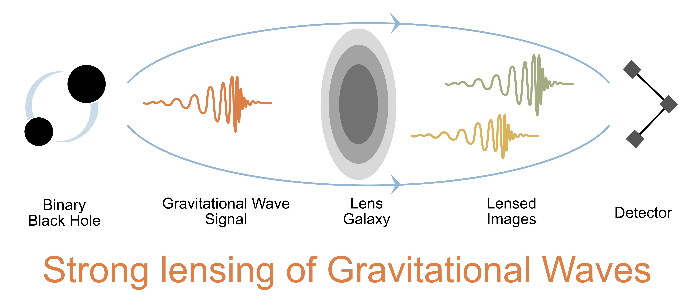
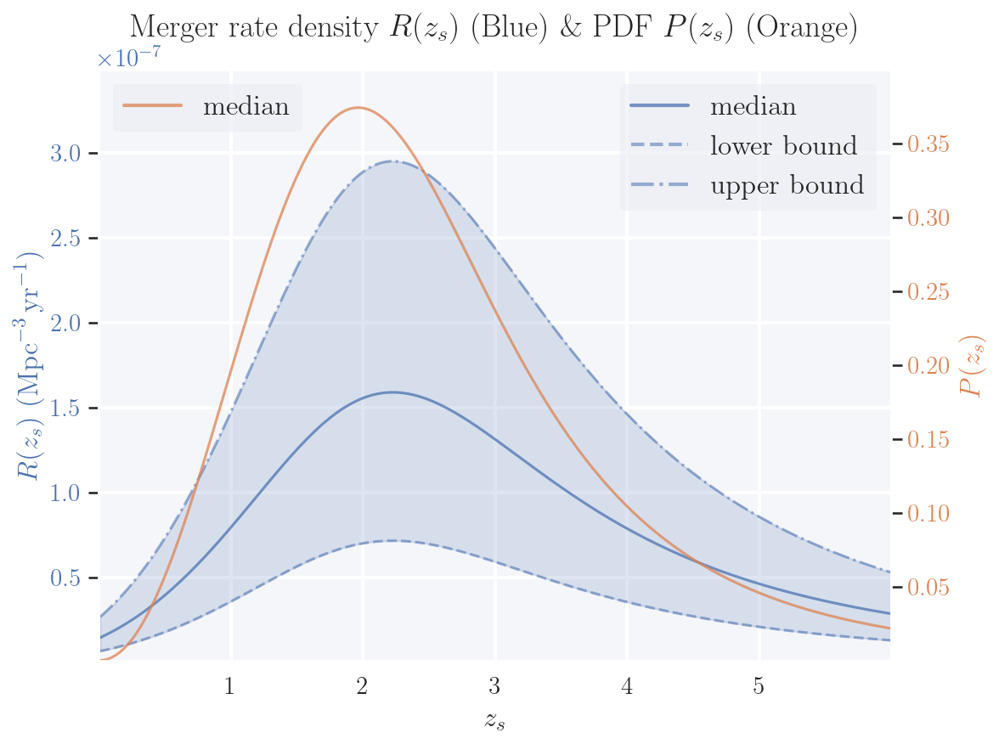
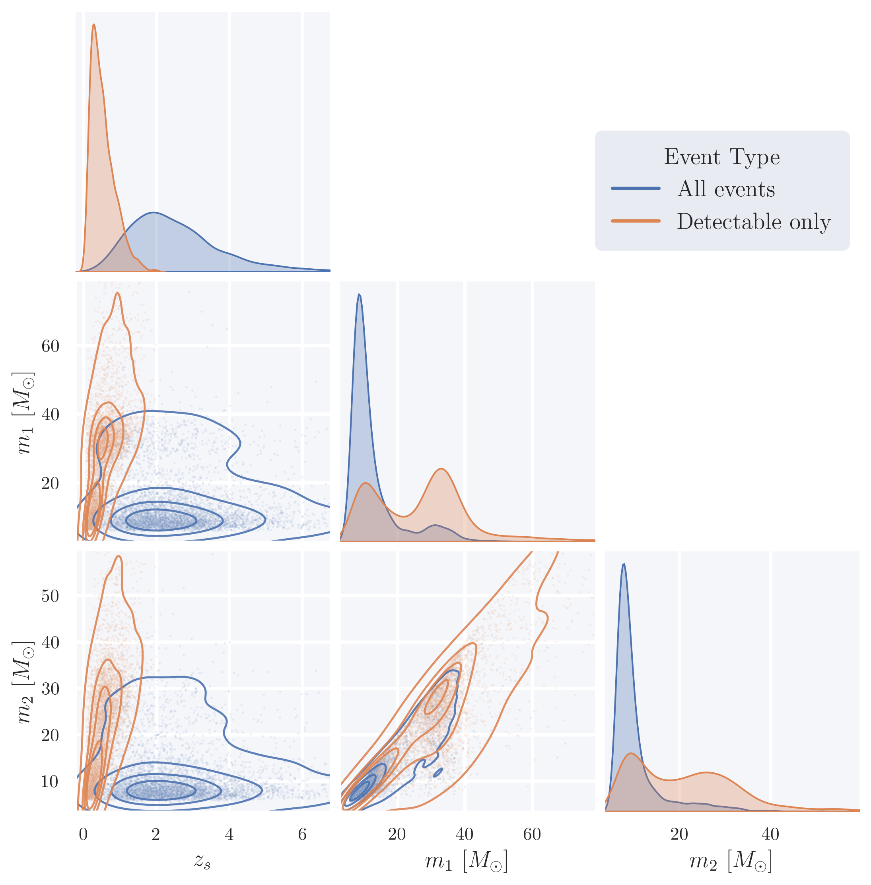
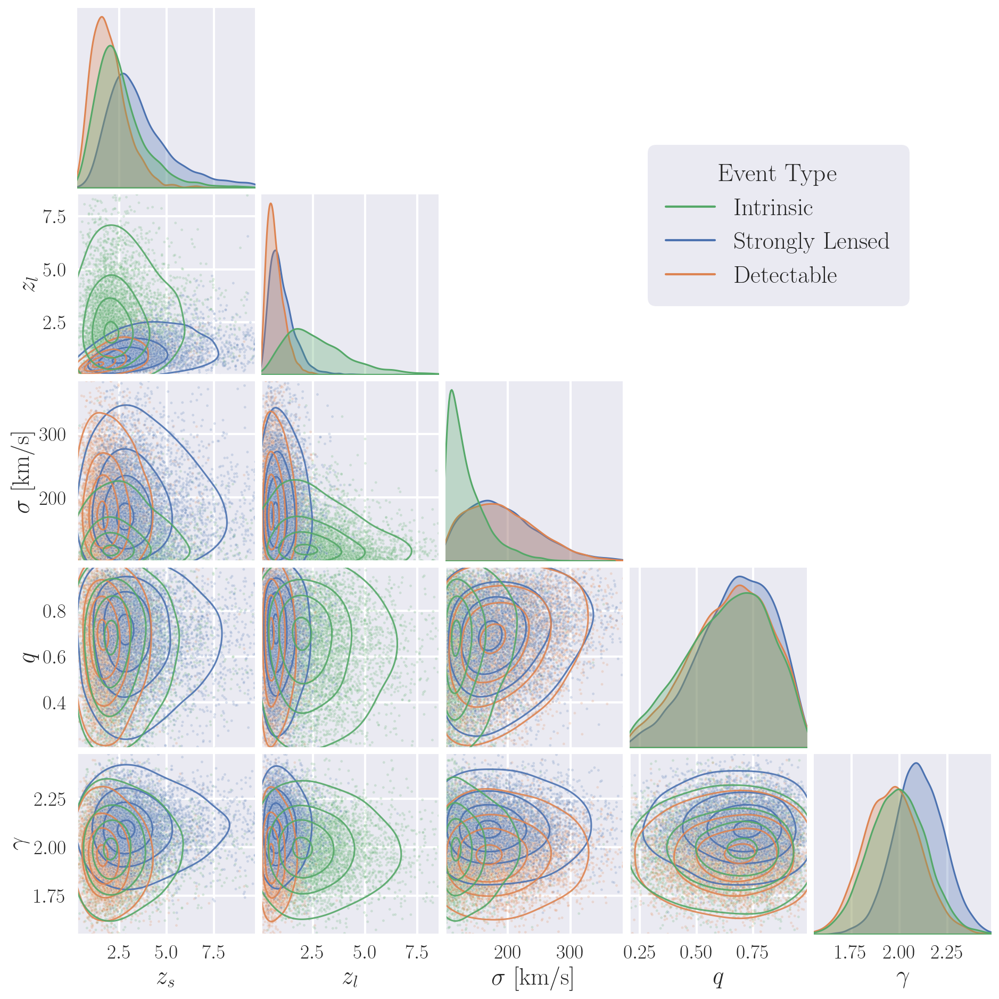

Summary

Interactive animation showing the lensing of gravitational waves by a massive object.
ler is a statistics-based Python package for simulating compact-binary
gravitational-wave populations and calculating detectable event rates. It
supports both unlensed and strongly lensed events.
The package is designed for gravitational-wave population studies, lensing studies, and forecasting for current and future detector networks.
Main workflow
ler separates the calculation into two related workflows.
For unlensed events, ler:
samples compact-binary source properties
evaluates detector-frame signal-to-noise ratios and detection probabilities
estimates detectable event rates with Monte Carlo integration
For strongly lensed events, ler also:
samples source and lens redshifts under the strong-lensing condition
samples lens properties using the lensing cross-section
samples source positions inside the multi-image caustic
computes image positions, magnifications, time delays, and Morse phases
applies image-level detection criteria
estimates detectable lensed event rates
Scientific models
ler supports compact-binary populations such as BBH, BNS, and NSBH systems.
The source-redshift distribution is based on merger-rate density and the
comoving volume element, including the detector-frame time-dilation factor.
For lensing calculations, the documentation describes the EPL+Shear model with lens parameters such as lens redshift, velocity dispersion, axis ratio, lens orientation, density slope, and external shear. The implementation uses optical depth and multi-image caustic cross-section calculations to sample the strongly lensed population.
Detector selection effects are evaluated through the gwsnr backend. The
default examples use an SNR threshold and waveform/detector settings described
in the analytical formulation pages.
Rate calculation
The unlensed detectable rate is written as the intrinsic detector-frame rate multiplied by the population-averaged detection probability:
The strongly lensed detectable rate is computed by averaging the detection probability over source parameters, lens parameters, and source position, conditioned on strong lensing:
Here, \(\mathcal{N}_{\mathrm{U}}\) is the total intrinsic merger rate in the detector frame, \(\mathcal{N}_{\mathrm{L}}\) is the total intrinsic merger rate in the detector frame for the lensed population, \(\vec{\theta}_{\mathrm{U}}\) and \(\vec{\theta}_{\mathrm{L}}\) denote the source and lens parameters, and \(\vec{\beta}\) is the source position in the source plane.
Example outputs
The figures below show examples generated with ler.

The redshift distribution combines the merger-rate density, comoving volume element, and cosmological time dilation.

Detectability selects a subset of the intrinsic population, typically favoring nearer and higher-SNR systems for a fixed detector network.

Strong lensing and detector selection introduce additional selection effects in source redshift, lens redshift, velocity dispersion, axis ratio, and density slope.
Learn more
For the full derivation and assumptions, see: